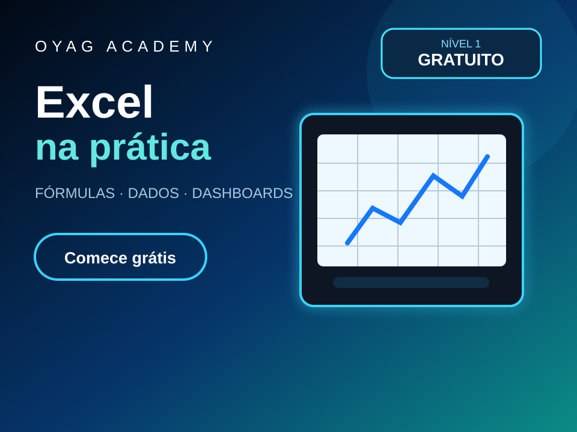
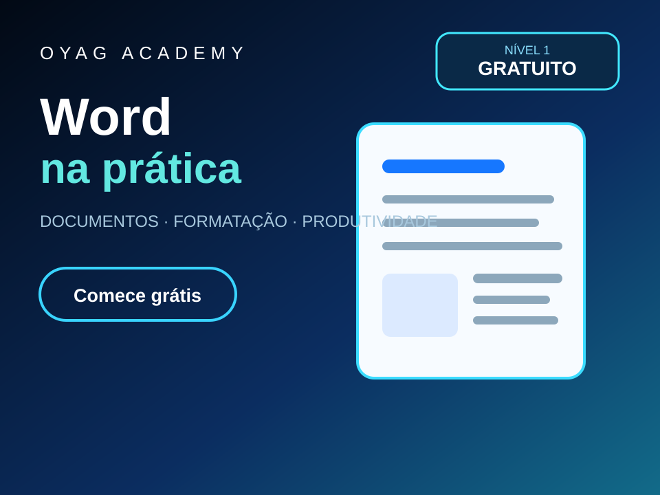
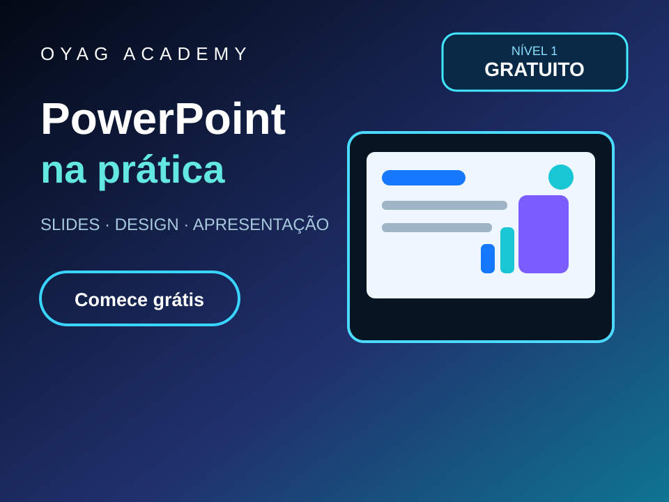

Explicação objetiva, conceitos e exemplos aplicados.
OYAG Academy · formação prática
Aprenda fazendo — usando a ferramenta de verdade.
A OYAG Academy é a área de formação do OYAG Ecosystem. Aqui o aluno não entra apenas para assistir conteúdo: entende o conceito, pratica no computador ou celular, passa por checkpoints e avança conforme demonstra domínio.
O aluno executa a tarefa usando a ferramenta real.
Checkpoints e critérios verificam se a etapa foi dominada.
O próximo nível é liberado conforme a progressão prevista.
Formação principal
Programação do Zero ao Avançado
A primeira trilha completa da OYAG Academy. Ela começa nos fundamentos e avança por JavaScript, web, Git, APIs, banco de dados, segurança, arquitetura, SaaS e projeto profissional.
Disponível · Nível 1 gratuito
Aprenda programação praticando de verdade.
A formação foi organizada em 10 níveis e 50 aulas. A proposta é reduzir a distância entre “ver a matéria” e realmente conseguir aplicar o conhecimento.
- 10 níveis progressivos
- 50 aulas estruturadas
- Exercícios e checkpoints
- Laboratórios com validação técnica nas etapas já automatizadas
- Projeto profissional no nível final
Próximas trilhas
A Academy foi pensada para crescer além da programação.
As novas trilhas já estão estruturadas na OYAG Academy. Cada uma possui Nível 1 gratuito e progressão por etapas, mantendo a mesma metodologia: entender, praticar, comprovar e evoluir.

Disponível · Nível 1 gratuito
Excel na Prática
8 níveis e 40 aulas sobre planilhas, fórmulas, dados, gráficos, análise e produtividade.

Disponível · Nível 1 gratuito
Word na Prática
8 níveis e 40 aulas para produzir documentos profissionais, trabalhar com estilos, referências, revisão e modelos.

Disponível · Nível 1 gratuito
PowerPoint na Prática
8 níveis e 40 aulas de estrutura, narrativa, design, gráficos, Slide Mestre, animações e apresentação profissional.
Disponível · Nível 1 gratuito
Digitação & Produtividade Digital
10 níveis e 50 aulas com digitação, precisão, velocidade, atalhos, Windows, macOS e organização digital.
Direção pedagógica: cada trilha publicada precisa manter uma jornada prática clara. A tecnologia muda conforme o curso, mas a lógica permanece: entender → executar → comprovar → evoluir.
Academy ≠ Conteúdos
Dois caminhos diferentes, conectados entre si.
OYAG Academy é formação estruturada com trilha, prática e progressão. Conteúdos é a biblioteca pública de artigos e guias gratuitos do site.